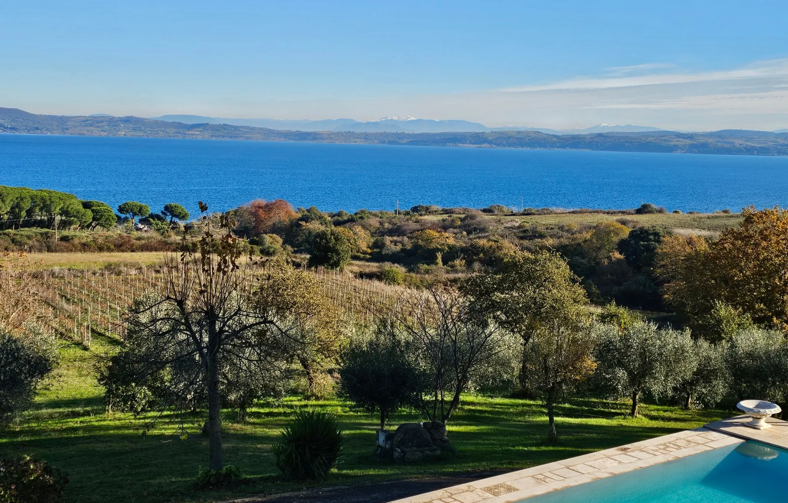
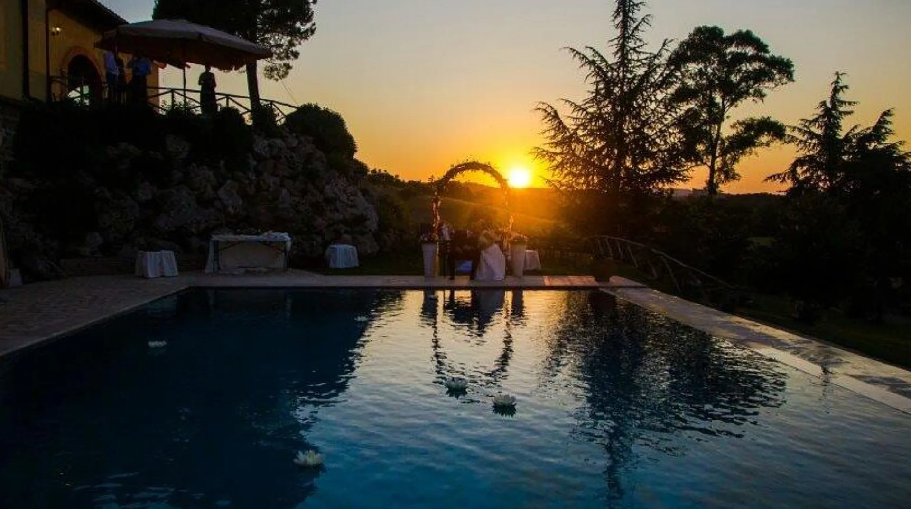
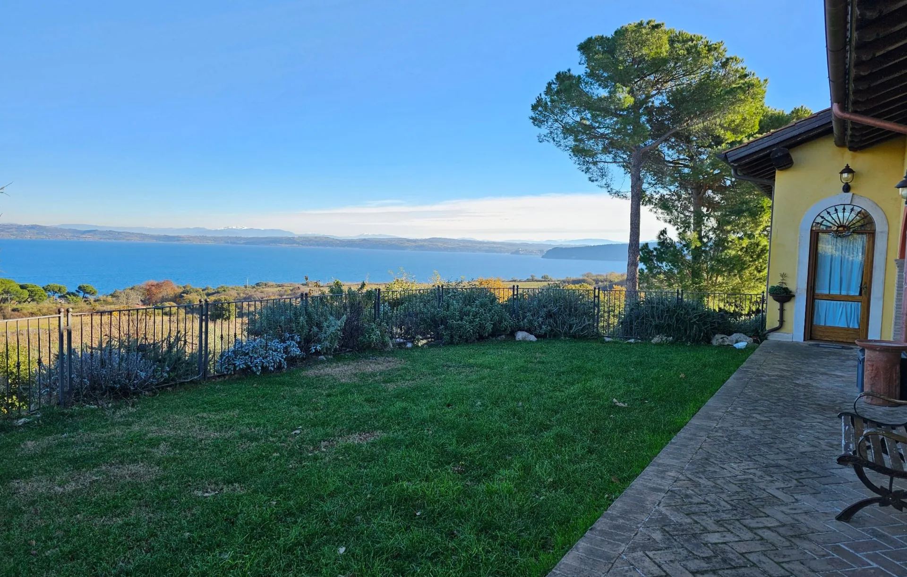
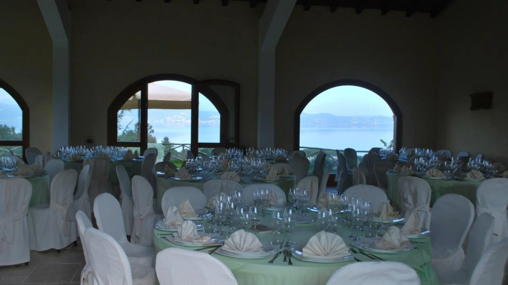
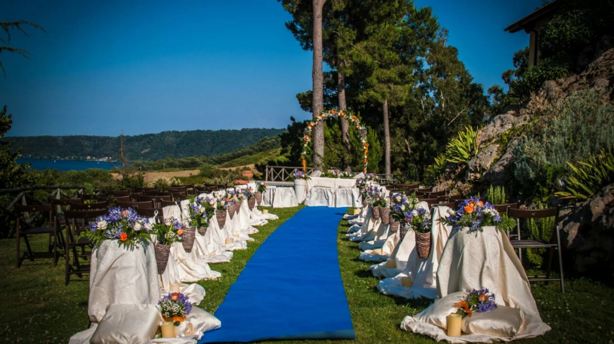
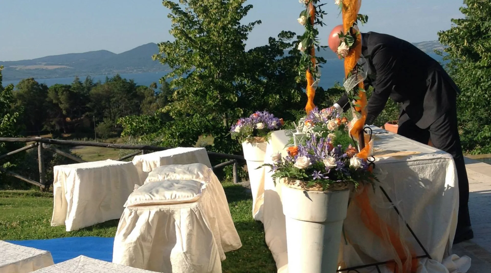
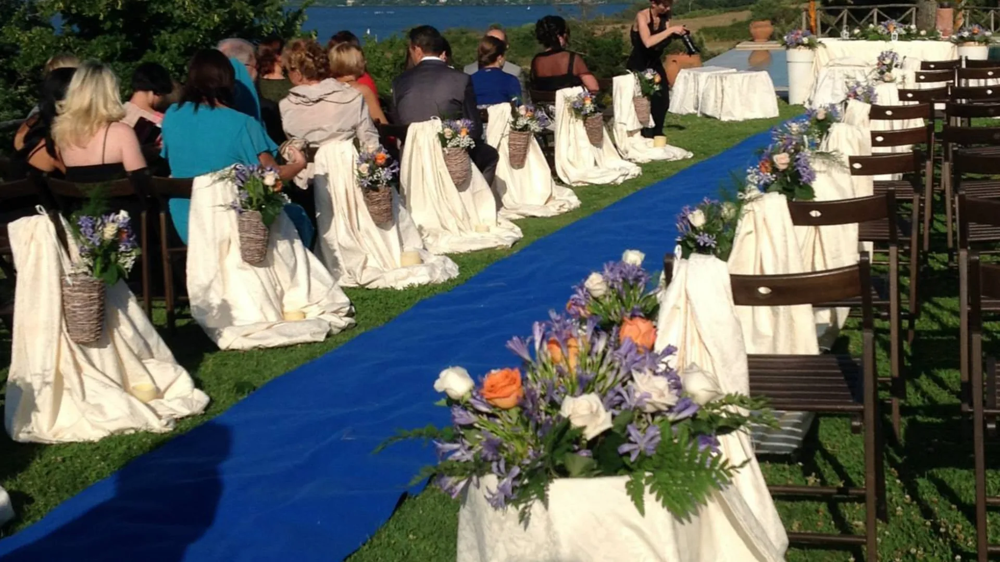
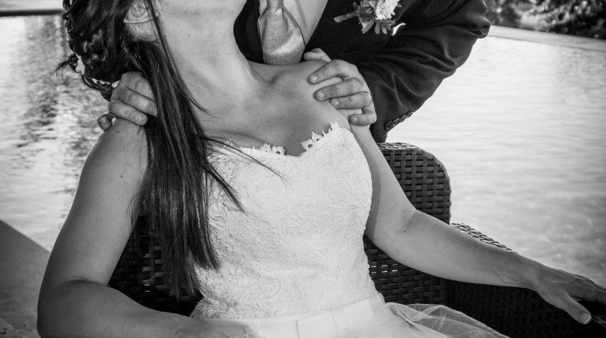
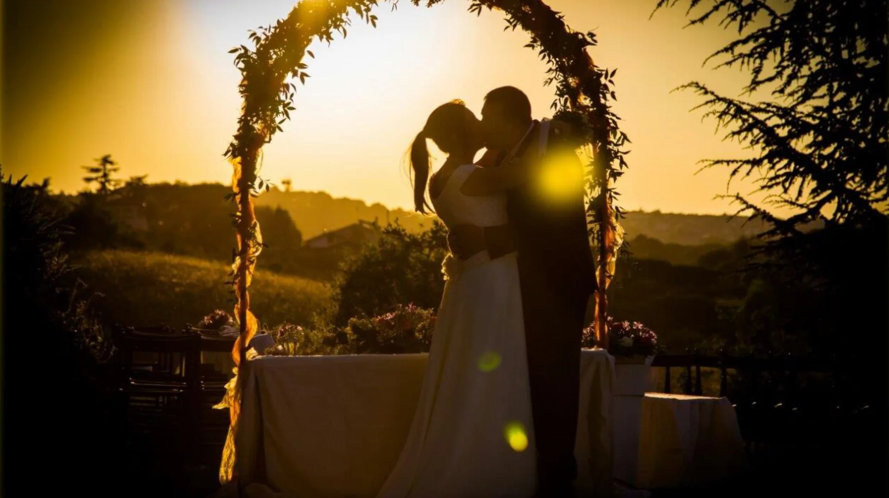

Il lago come respiro.
Lo sguardo arriva fino al lago e al profilo di Bracciano: è la prima immagine che accompagna l'arrivo degli ospiti.

Agriturismo per matrimoni, eventi e degustazioni con vista sul Lago di Bracciano.
Agriturismo · Matrimoni · Eventi privati
Agriturismo
Vista lago, giardino, piscina e salone raccolti in un percorso essenziale, per capire il carattere del luogo prima di visitarlo.
Tra lago e cielo
Tra Lago e Cielo deve il suo nome allo skyline che abbraccia il lago, Anguillara, Trevignano e il Castello Odescalchi di Bracciano. Il parco, la piscina e gli spazi interni costruiscono una location semplice, accogliente e scenografica.
Lo sguardo arriva fino al lago e al profilo di Bracciano: è la prima immagine che accompagna l'arrivo degli ospiti.
Prati ampi, piante autoctone e fiori accompagnano accoglienza, aperitivi e momenti all'aperto.
Salone, terrazza, piscina e giardino permettono di alternare interni ed esterni secondo la giornata e la stagione.
Video
Un modo rapido per vedere il luogo in movimento, tra paesaggio, verde e spazi esterni.
Galleria
Immagini raccolte della piscina, del giardino, del salone e delle vedute sul Lago di Bracciano.




Matrimoni ed eventi
Cerimonie civili reali in villa, aperitivi all'aperto, momenti conviviali nel salone e ricevimenti con vista sul lago.
Spazi e capienza
Il giardino di 40.000 mq confina con il parco di Bracciano-Martignano. Il salone accoglie fino a 110 persone, mentre terrazza, piscina e prato permettono aperitivi, accoglienza e momenti all'aperto.
Possibilità di rito civile reale in villa con cerimoniere comunale.
Giardino, piscina e vista lago per accogliere gli ospiti prima del ricevimento.
Il salone consente momenti conviviali all'interno; terrazza, piscina e prato accolgono gli eventi all'aperto.
Per disponibilità, menu e servizi aggiuntivi, il passaggio naturale è un contatto diretto con la struttura.

Il paesaggio fa già molto: l'allestimento deve accompagnarlo, non sovrastarlo.




Domande frequenti
La capienza indicata per il salone è fino a 110 persone. Per configurazioni, allestimenti e servizi è consigliato un sopralluogo.
La struttura indica la possibilità di rito civile reale in villa con cerimoniere comunale. Disponibilità e procedure vanno confermate per la data scelta.
È previsto un solo matrimonio al giorno, così da dedicare gli spazi all'evento.
Il salone offre uno spazio interno. La soluzione più adatta dipende dal numero degli ospiti e dall'allestimento, da definire direttamente con la struttura.
È possibile inviare una richiesta dalla pagina Contatti oppure chiamare il 328 8989566.
Produzione vini
Vermentino, Merlot e Chardonnay presentati con origine, annata e informazioni essenziali in modo chiaro.
Annata 2024
Le etichette possono accompagnare degustazioni e momenti conviviali su prenotazione. Qui sono raccolte le informazioni essenziali: nome, annata, categoria, produttore e origine indicata.
Origine e responsabilità
Le tre etichette riportano la produzione e l'imbottigliamento a cura di Azienda Agricola Rosalba Cutolo, Via Tassoni 4, Tarquinia, Viterbo.
Ingredienti, allergeni e dichiarazione nutrizionale sono indicati nelle rispettive schede tecniche delle etichette.
Contatti
Recapiti, social e mappa per richiedere informazioni, prenotare una visita o raggiungere la struttura.
Contatti e dove siamo
Telefono, email, social e indirizzo sono raccolti qui per rendere più semplice ogni richiesta: matrimoni, eventi, degustazioni, visite e indicazioni stradali.
Recapiti diretti
Come arrivare
La struttura si trova in Via della Lobbra 1b, a Bracciano, vicino al Lago di Bracciano.
Compila i dettagli essenziali: prepareremo un messaggio ordinato da inviare a Tra Lago e Cielo. Per ora l'invio utilizza il programma e-mail del dispositivo.